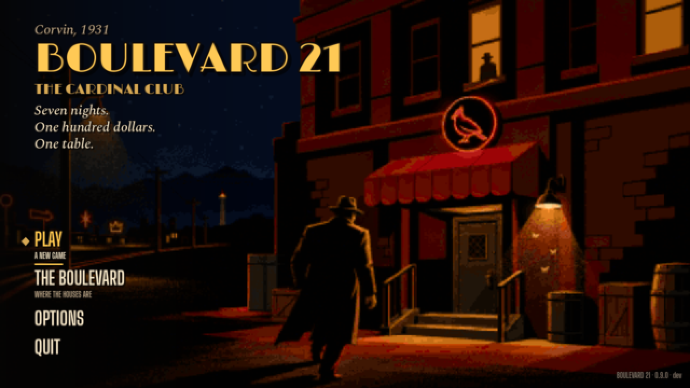
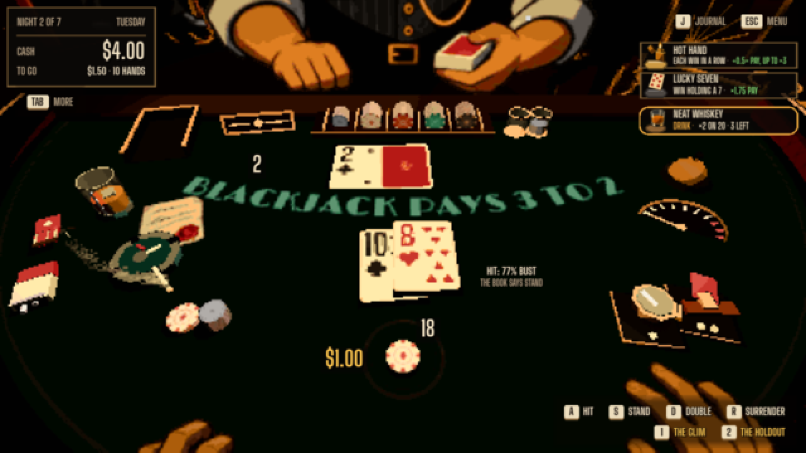
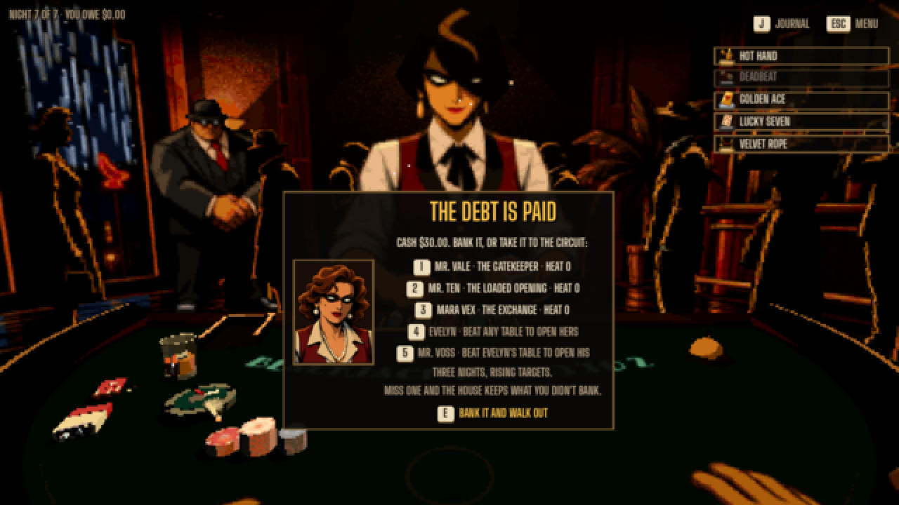
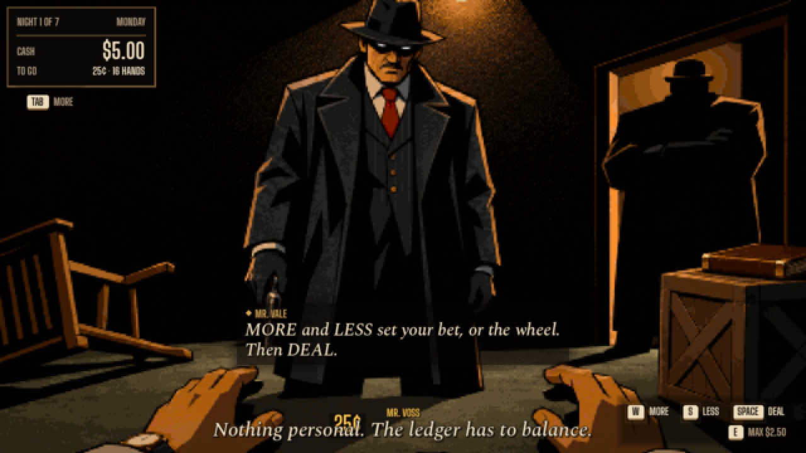
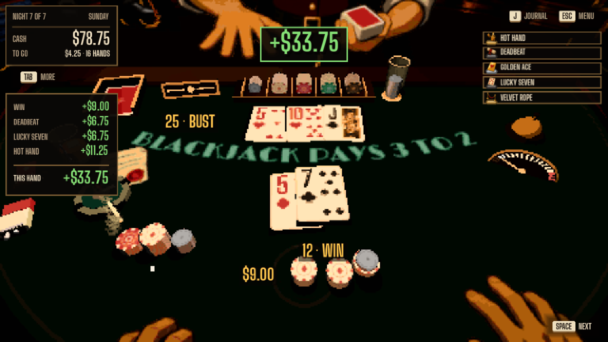
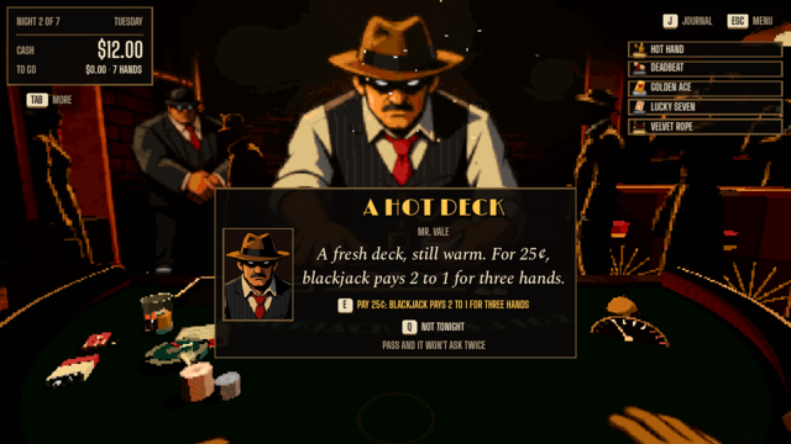
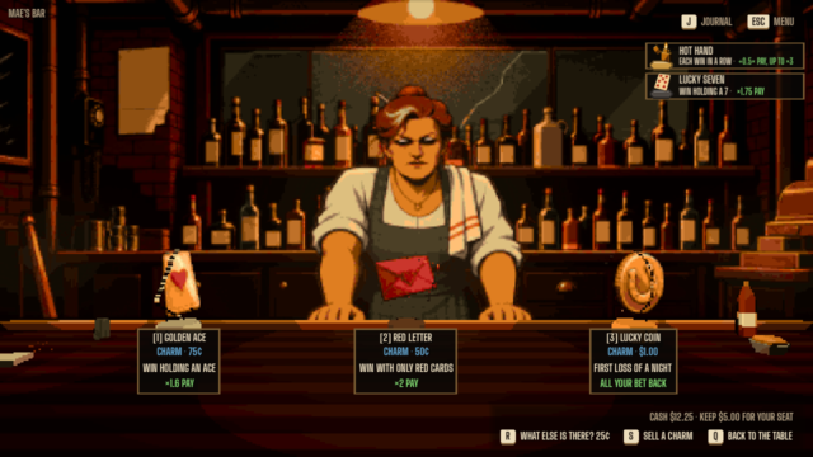
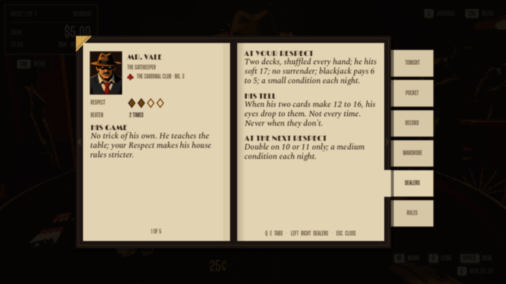
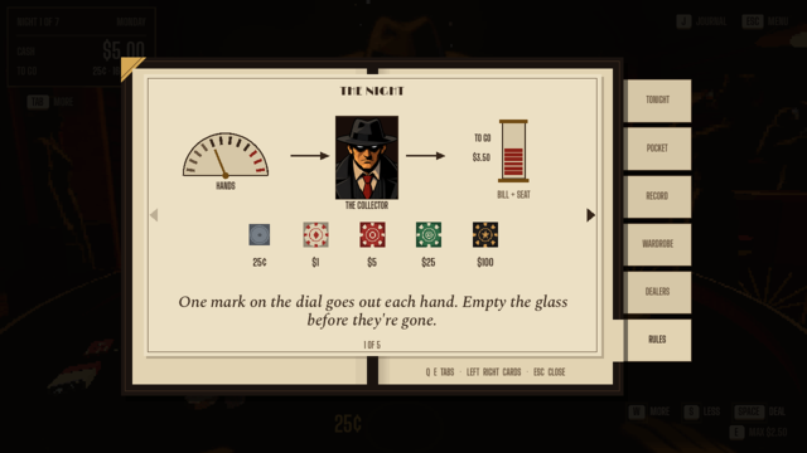
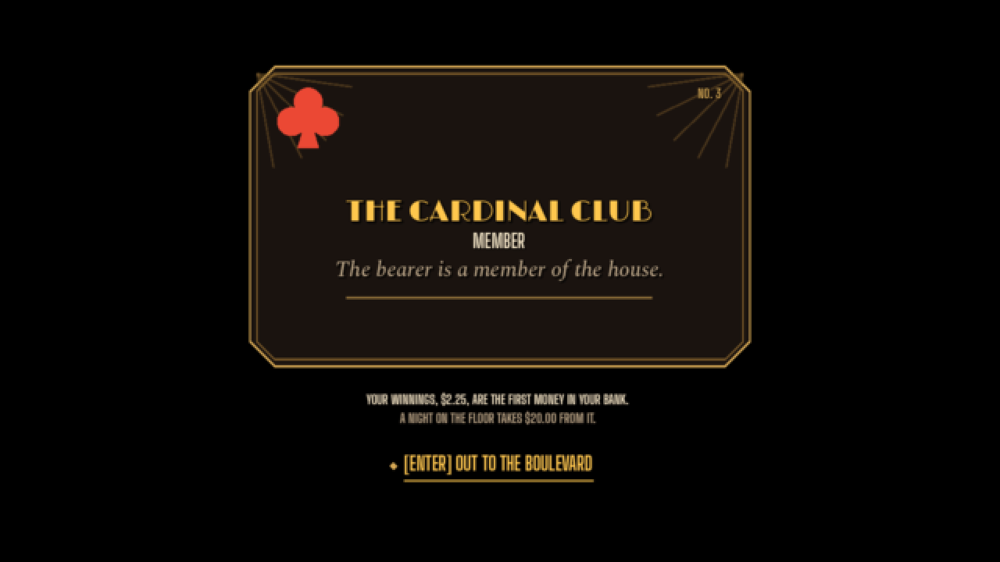

342 problems found in play and review, each numbered, with its evidence and how the fix was checked.
Boulevard 21 · a card game in progress
A blackjack game, tuned by thousands of simulated nights.
It’s 1931: five dollars, seven nights, and a hundred-dollar debt to the house. Each dealer plays by a rule of their own.
I play it and approve every rule; AI models write and review the code. In active development, not released.

How it’s built
355 rules tests and 110,000 simulated nights check every rule change.
A rule ships only if a careful player can still win, and the night still gets harder.
Why I’m making it
Blackjack you already know. A house that plays back.
Most card games either teach you nothing new or bury you in rules. I wanted one a blackjack player can sit down at in a minute, where the depth comes from the dealers: one always opens with a ten, another can swap a card with you under a posted rule.
Each night you choose a table, try to win its target in a set number of hands, and decide whether to walk out with what you have. Never more than seven things to understand at one table is a written rule of the project.
-

1. Pick a table. Each dealer has a target and a rule. -

2. Play the hand. Charms add a small edge you can see. -

3. Pay the house. Seven nights to clear the debt.
How it’s tested
Every rule change gets played thousands of times before I play it.
The rules run on their own, without the screens, so a computer can play them fast. Each check plays 2,000 nights for each of 11 playing styles, from careful to reckless, at each of 5 difficulty levels. The question is the same one I ask of an ad report: does the number mean what it seems to?
Level 1 · easiest82% 82%
Level 275% 75%
Level 370% 70%
Level 460% 60%
Level 5 · hardest50% 50%
What the simulations caught
An early version looked reasonable on paper. The simulations said otherwise: day one failed in 61–71% of runs, even for aggressive players, and only 5–7% ever paid off the debt. That finding drove the retune.
The game, screen by screen
A night makes more sense when you can see every beat.
Real screens from the current build, in order. Select any screen to see it larger.







1 of 10
What it took
The game is the smaller half. The record of it is the rest.
280 decisions written down with the reason, so a later change can’t quietly undo an earlier one.
86 written standards, from the seven-things rule to “every picture must fit the world, or it is redone.”
43 reference screens are compared after every change, so a fix in one place can’t break the look of another.
Started in late September 2026; 208 saved changes by mid-October.
Where it stands
Playable and tested. Not yet played by strangers.
The rules are measured. Whether it feels good to someone new is still an open question.
Today
A full first club
Seven nights, three dealers and the owner’s table, the bar, the journal, and an ending, on my own computer.
Next
Outside players
A written playtest plan is ready. No one outside the project has played it yet.
Not yet
A release
No claims about sales, players, or growth. It ships when the playtests say it’s ready.